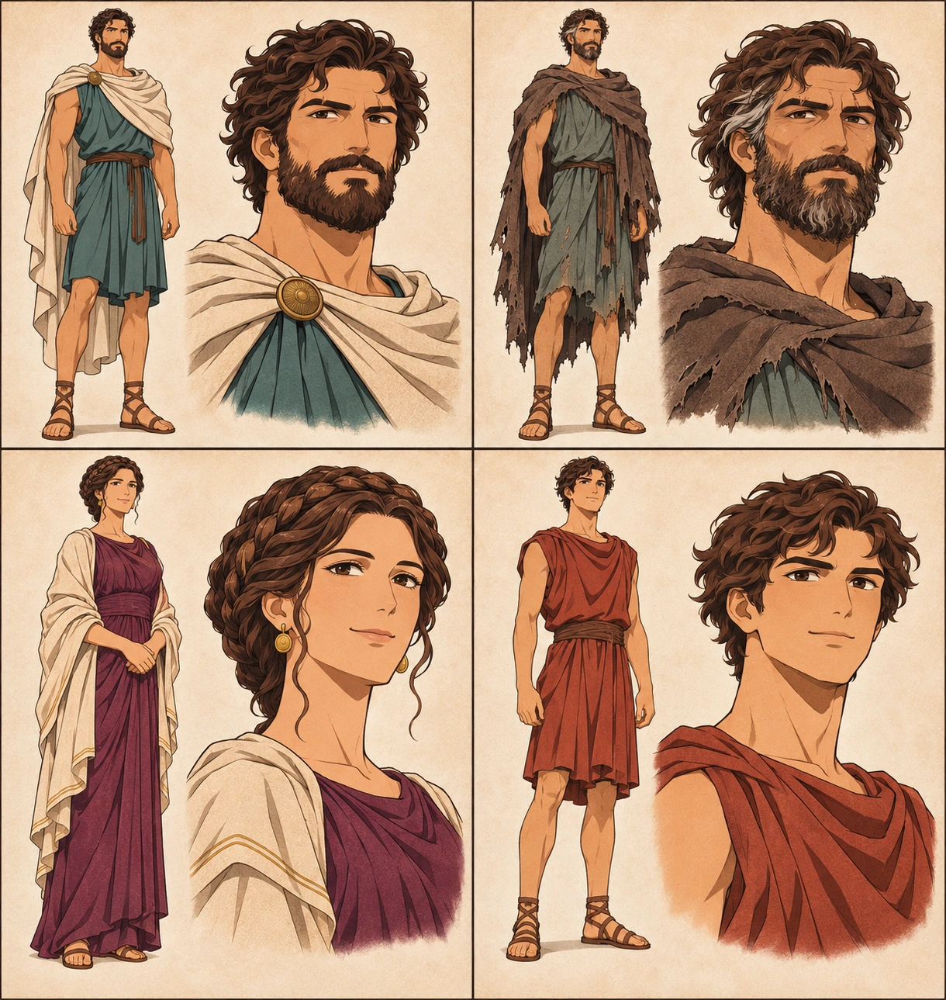
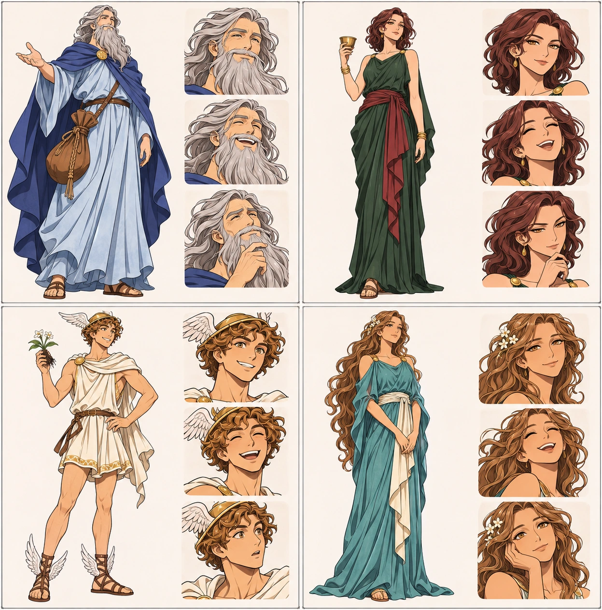
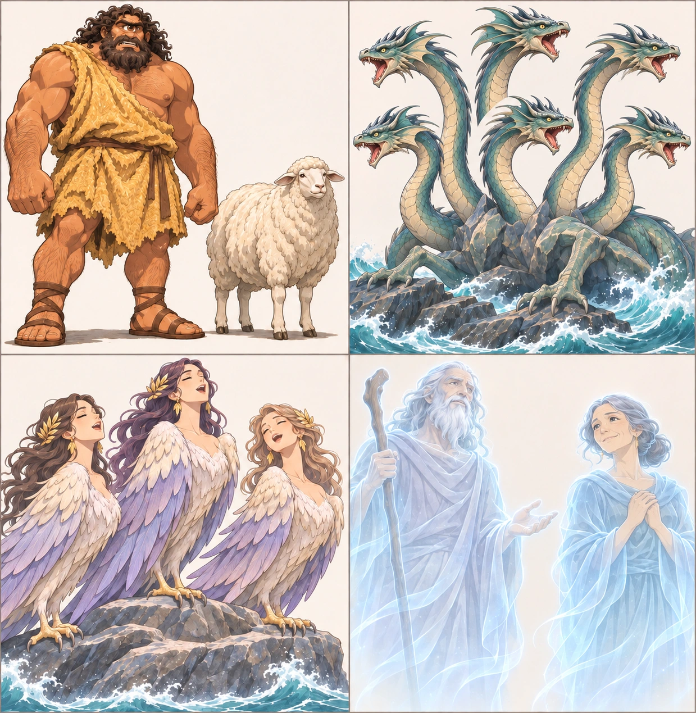
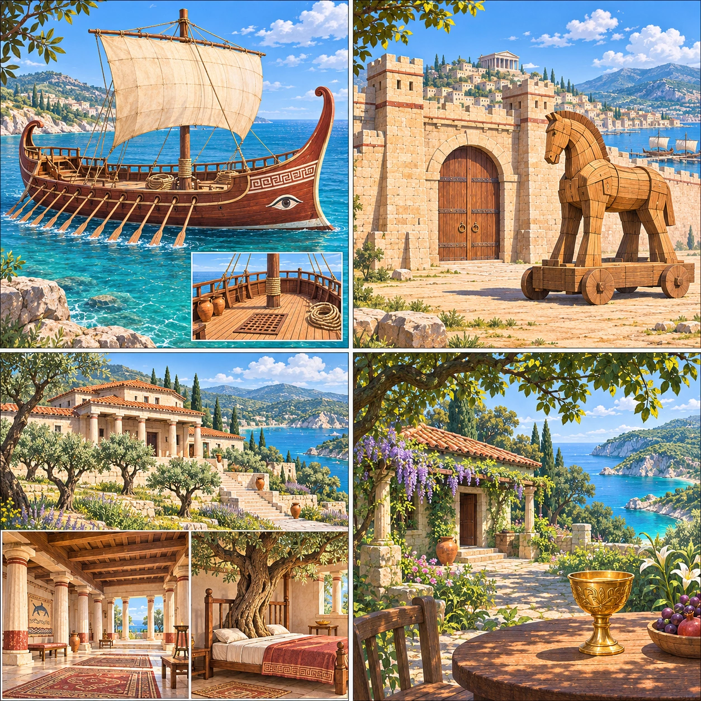

Source facts follow supplied retelling. Ages, facial features, garment colors, architecture and Siren bird form are production choices for consistency, not historical claims.




Olive-tan athletic man, dark brown eyes, short curly dark hair, full beard, left eyebrow notch. Sea-teal knee-length chiton, leather belt and sandals; cream cloak before wreck; faded tunic with no cloak in water; later gray temples and weathered beard; ragged brown cloak on return.
Olive skin, brown eyes, dark crown-braided hair, plum-purple long chiton, cream shawl, simple gold earrings; adult mature face.
Young adult at reunion, olive skin, wavy short dark hair, clean-shaven; rust-red knee-length chiton and brown belt. Not a small child at return.
Adult Mediterranean men, simple ochre/navy short tunics and sandals; repeat same two recognizable secondary faces where possible. No modern military clothing.
Enormous stocky bronze-tan cyclops, exactly one eye, curly black hair and beard, rough ochre wool tunic. Eye injury remains offscreen.
Older gray long-bearded man, sky-blue robe, deep blue cloak, brown tied leather bag.
Adult olive-skinned woman, amber eyes, shoulder-length dark auburn waves, forest-green robe, wine-red sash, gold bracelets, golden cup.
Youthful adult, golden-brown curls, ivory short tunic, winged sandals, white flower with dark roots; sheet also includes a winged cap as fixed visual choice.
Kind elderly translucent silver-haired man, long silver beard, pale gray robe and staff.
Kind elderly translucent woman, gray low bun, pale blue robe, family resemblance to Odysseus.
Three fully feather-covered adult bird-women, ivory/lavender plumage, wings and bird feet. Bird form is an adaptation choice, not specified in supplied retelling.
Exactly six separately countable teal-gray serpentine heads on six necks, one shared creature body; loss portrayed without visible victims.
A single huge clockwise sea whirlpool opposite Scylla’s cliff; no extra invented face.
Healthy golden-brown cattle in green meadow; killing and wounds not illustrated.
Adult warm olive skin, very long honey-brown waves, green-brown eyes, turquoise long robe, ivory sash and small white flowers.
Arrogant adult men in muted cream/ochre/gray tunics, no modern clothes; no graphic combat.
Keep offscreen unless directly required; convey sea danger, lightning and permission through described events, no invented deity subplot.
Warm sandy limestone walls, square gate towers, broad wooden double gate, honey-brown wheeled horse; day construction, sunset entry, moonlit escape.
Red-brown timber hull, single mast and cream square sail, paired oars, raised curved prow and stern; same intact vessel until Chapter8.
Pale rocky island, broad warm-rock cave, giant round boulder at doorway, white sheep and cheese baskets; no modern doors.
Sunny terrace above turquoise sea; tied brown leather wind bag only contains winds, not gold.
Lush forest-green island, forest-green stone house, ochre-red roof, wood table and golden cup; leafy path where Hermes appears.
Still blue-gray shore, mist, reeds and muted horizon; gentle luminous spirits, no horror props.
Low isolated rocky islet beside hazardous rocks; ship safely passes at a distance, Sirens remain ashore.
Scylla cliff to viewer left and single immense whirlpool to right; ship must pass cliff side, no spatial reversal in same sequence.
Sunny green meadow with golden-brown cattle, then windbound shore and hungry camp, followed by sea storm.
Lush sheltered cove, small coastal shelter, turquoise water, warm quiet light; new small boat at departure.
Cream-stone palace, terracotta roof, olive grove and sheltered blue bay; hall cream columns/wood beams; bedroom bed built around rooted olive tree.